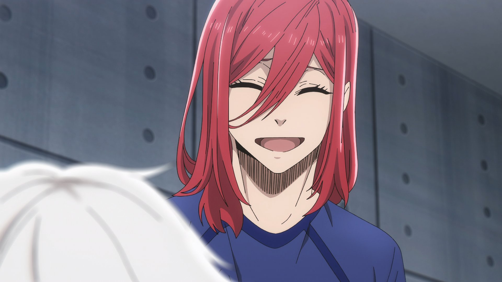
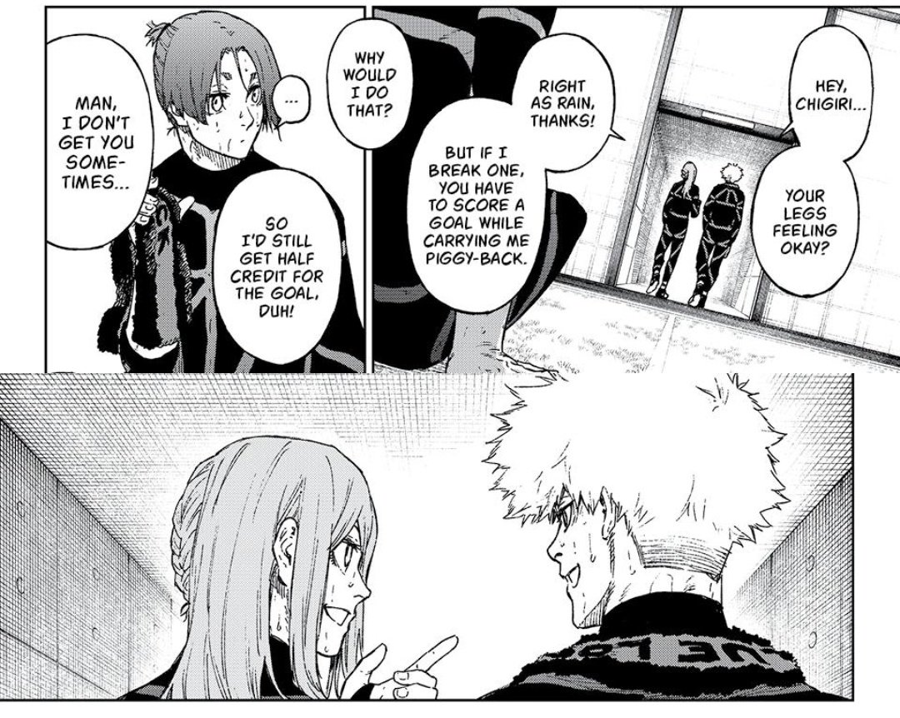

" If this misses, or my leg gets busted again, then I'll give up soccer... But if I make this goal, and my leg still isn't broken, then... To make my dream a reality... To become the best of the world... I want to keep playing. "
Chigiri Hyoma is one of the main characters of Blue Lock. His main weapon is his speed, he is one of the fastest players in Blue Lock. As a child, he was a prodigy among his peers. However, his ACL was torn during a match, if it's damaged again, he will never be able to play soccer again. After that accident, he stopped playing soccer, in fear breaking his leg again. In Blue Lock, despite Chigiri wishing to quit soccer, the protagonist Isagi never gave him up, and Isagi's determined performance during the match lit up Chigiri's passion once again. Now, he is one of the top players in the remaining participants, giving his all to improve and climb to the top.
Why I like this character
My process of starting my interest on Chigiri is quite normal. His feminine design stands out in the cast, and the fact he has bright pinkish-red hair hints that he has an important role despite he hadn't done much. When he revealed that he was afraid of breaking his ACL the second time, causing him to unable to run as fast as he used to, I knew I was going to enjoy his arc.
And of course, Chigiri did not disappoint me. Watching the protagonist Isagi running as fast as he can just to have a chance of saving the match, Chigiri was reminded of the passion he once had when he could outrun everyone in the field and become the best. He stood up, and broke off his symbolic chains tying him down. When the opponent team least expected it, Chigiri dashes through the field and retrieves the ball in the nick of time. Running past everyone, he kicked the ball forward, and ran further, passing the ball to himself. Alas, Chigiri scored, saving his team.
Maybe I haven't watched enough sports anime, but I absolutely love this character arc. From Chigiri nearly giving up soccer, to regaining his hopes and dreams. When he was sprinting across the field, I can feel myself cheering for him and my heart beating like crazy. I got very emotional when he said he wanted to dream again and play soccer again.

( I love his smile here )
Outside of the field, Chigiri is quite laid-back. He does things in his own way and pace, and tend to not listen with other's orders, even if that person is older than him. He's often late to meetings and piss off Barou the clean freak lol, his is why the nickname Selfish Princess really suits him. However, he gets along with the main gang quite well. Him and Isagi seems to have mutual trust, while being rivals, they always look out for each other. Chigiri also often hang out with Kunigami, as Kunigami tend to be nicer and more understanding, their bond is very sweet. In the spin-off, Kunigami asks if Chigiri's leg is alright, and Chigiri replies it's right as rain, and if he breaks one, Kunigami has to score a goal while giving him a piggyback, so that he can get half credit for the goal. This is genuinely adorable. ( Click to see spoilers: And even WildCard Kunigami becomes emo and keeps his friends away by being cold, Chigiri still believes in him, and tells Kunigami to keep an eye on Chigiri, just like how Chigiri keeps an eye on Kunigami )

*screaming*
Watching this anime made my year, it's also one of the things that kept me up at night because nobody I know except my sister watches Blue Lock, and I can't fall asleep without sharing this joy and excitement.
( P.S. his theme is such a banger pls listen )
Random facts
- Well this is more of a theory than fun fact, anyways, many people believe that the reason his jersey number is 4 is because it refers to his future death of his soccer dream ( 4 sounds like death in Japanese ), which I don't exactly agree. In Blue Lock, 299 out of 300 will be eliminated and only one winner will be chosen. Just because Chigiri has a possibility of breaking his ACL the second time and having to quit football, doesn't mean his elimination will be more special than others ( Click to see spoilers: Yukimiya also has eyesight problems that may end his soccer career, you know ). I'm not too sure about the true meaning of the 4, but one theory I have, the 4 represents how he once wanted to give up soccer by being eliminated in Blue Lock, hence killing his dream. Another dumber explanation is that if you write 千 in his surname 千切 poorly, it would look like 4.
- His name 豹馬 contains the word 豹, meaning cheetah or panther.